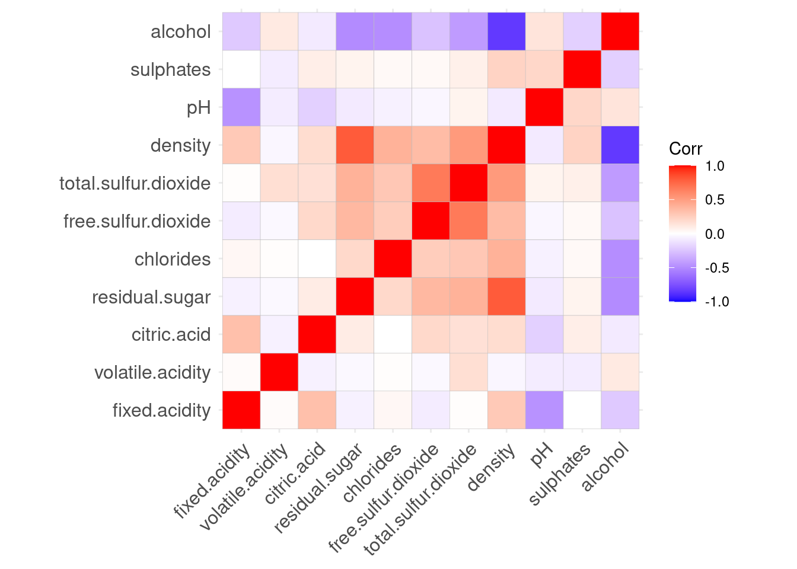
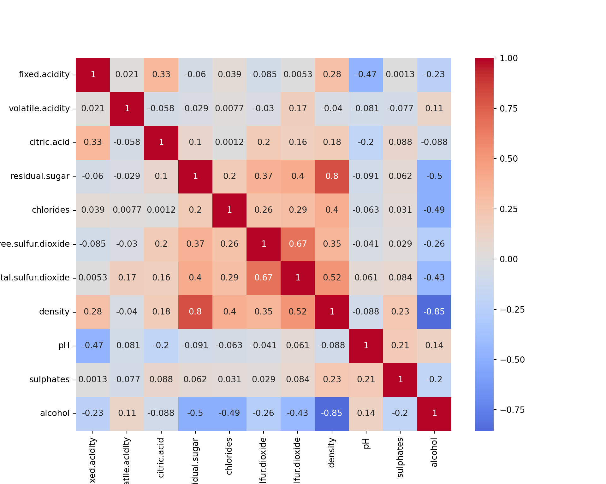
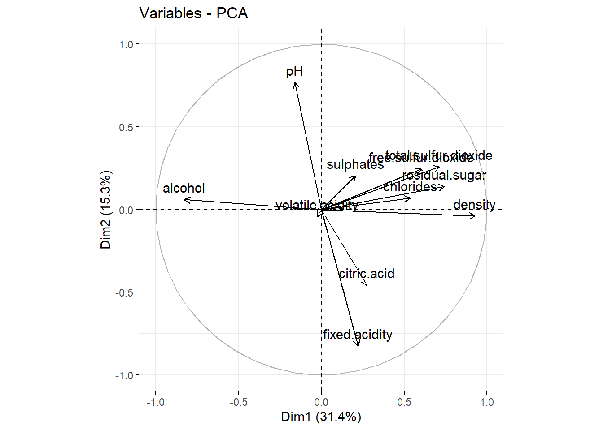
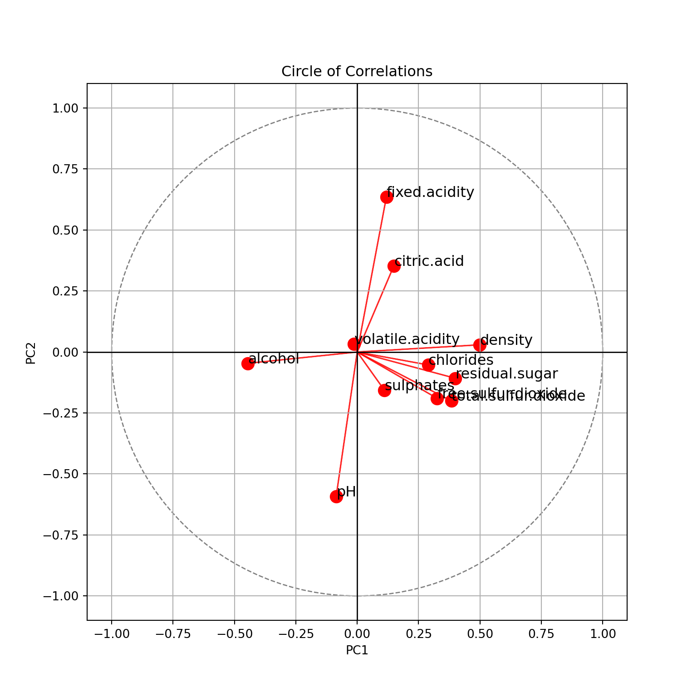
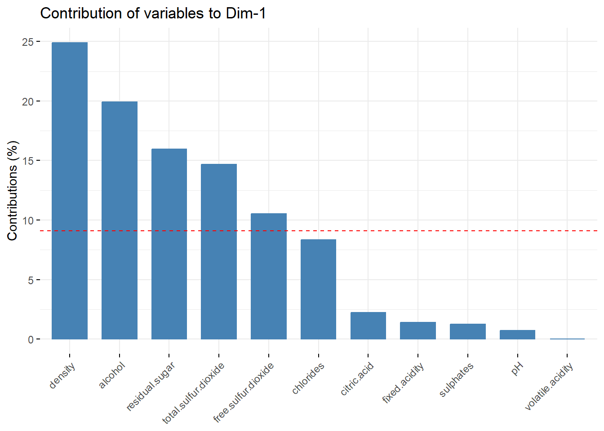
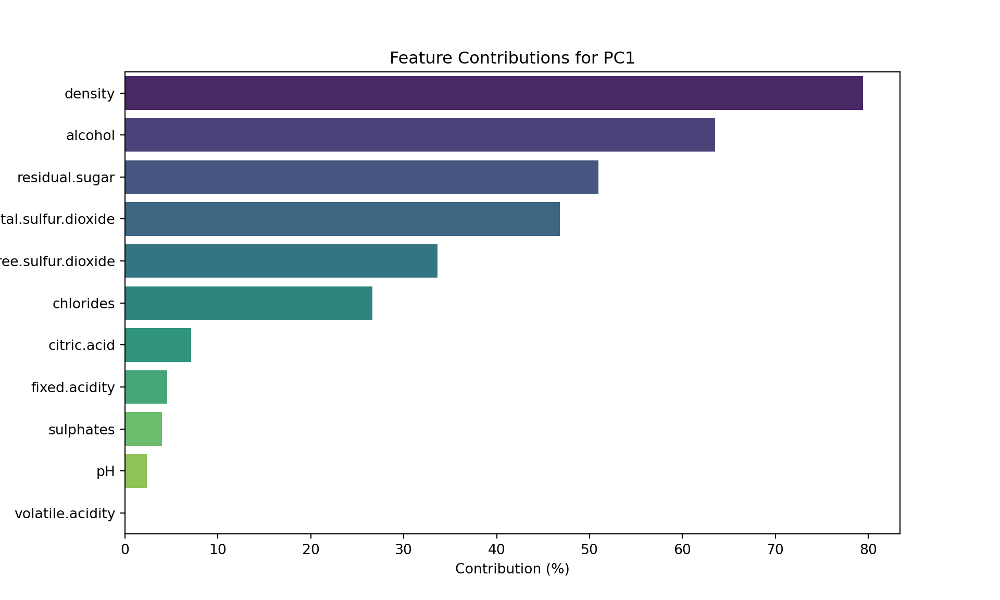
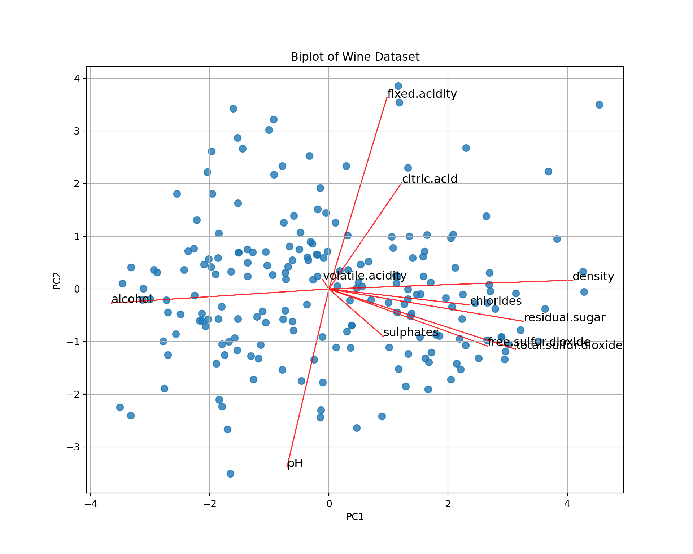
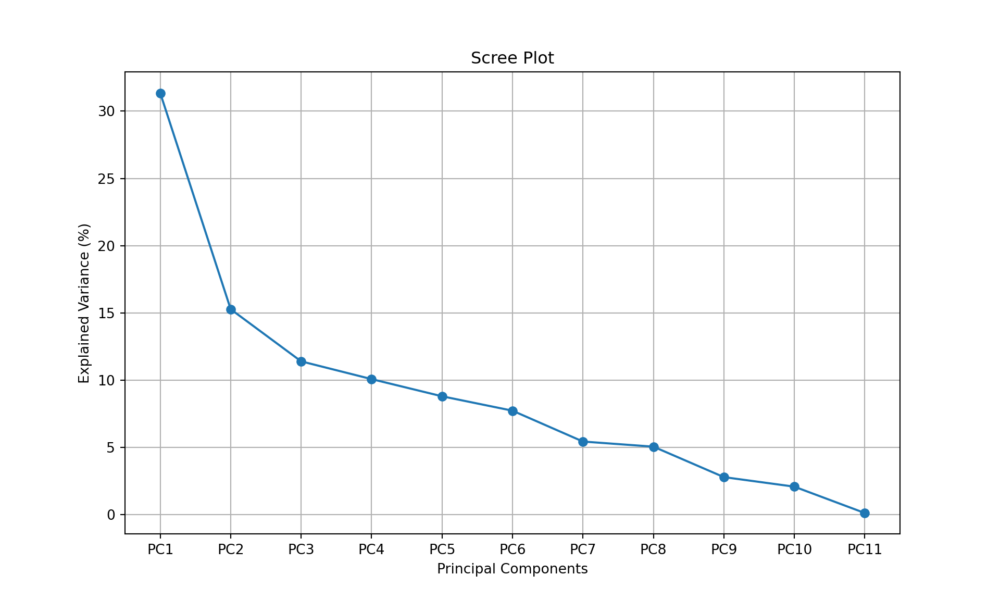
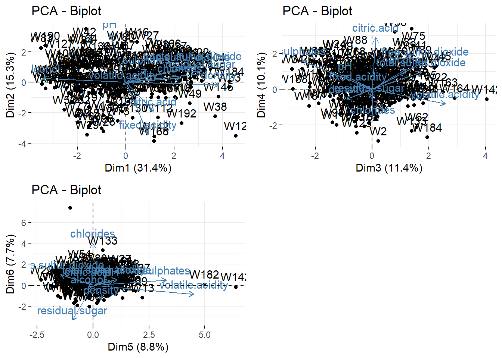
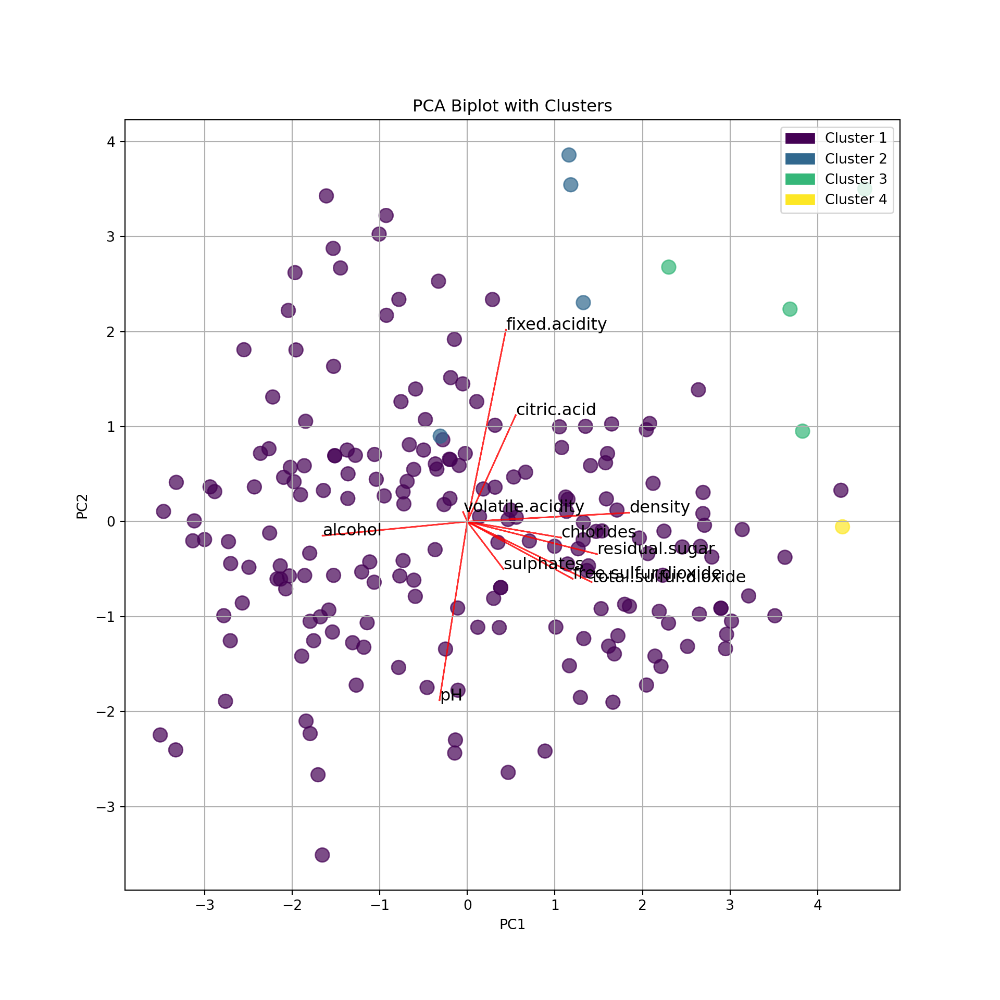

Principal Component Analysis
Data preparation
In this series of exercises, we illustrate PCA on the wine data already used for clustering. We first load the data.
library(reticulate)
use_condaenv("MLBA")import pandas as pd
from sklearn.preprocessing import StandardScaler
wine = pd.read_csv('../../data/Wine.csv')
wine.index = ["W" + str(i) for i in range(1, len(wine)+1)]
scaler = StandardScaler()
wine.iloc[:, :-1] = scaler.fit_transform(wine.iloc[:, :-1])Note that here the scaling of the variables is optional. The PCA can be applied on the correlation matrix which is equivalent to use scaled features. We could alternatively use unscaled data. The results would of course be different and dependent on the scales themselves. That choice depends on the practical application.
Principal Component Analysis
Before to run the PCA, it is sometimes good to represent the correlations between the features.
library(ggcorrplot)
ggcorrplot(cor(wine[,-12]))
import seaborn as sns
import matplotlib.pyplot as plt
plt.figure(figsize=(10, 8))
sns.heatmap(wine.iloc[:, :-1].corr(), annot=True, cmap="coolwarm", center=0);
plt.show()
Please note that all the interpretations will be based on the R outputs. The python outputs can be slightly different; however, these differences have been explained wherever possible.
We see that some features are (negatively or positively) correlated, like alcohol and density. This means that they bring to some extend the same information to the data. They could thus be combined in a single feature. This is in fact what PCA is doing.
We now compute the principal components. There exist several functions in R for this. We use PCA available in package FactoMineR. It is completed by factoextra that provides nice visualizations.
library(FactoMineR)
library(factoextra)
wine_pca <- PCA(wine[,-12], ncp = 11, graph = FALSE)
wine_pca**Results for the Principal Component Analysis (PCA)**
The analysis was performed on 200 individuals, described by 11 variables
*The results are available in the following objects:
name description
1 "$eig" "eigenvalues"
2 "$var" "results for the variables"
3 "$var$coord" "coord. for the variables"
4 "$var$cor" "correlations variables - dimensions"
5 "$var$cos2" "cos2 for the variables"
6 "$var$contrib" "contributions of the variables"
7 "$ind" "results for the individuals"
8 "$ind$coord" "coord. for the individuals"
9 "$ind$cos2" "cos2 for the individuals"
10 "$ind$contrib" "contributions of the individuals"
11 "$call" "summary statistics"
12 "$call$centre" "mean of the variables"
13 "$call$ecart.type" "standard error of the variables"
14 "$call$row.w" "weights for the individuals"
15 "$call$col.w" "weights for the variables" from sklearn.decomposition import PCA
pca = PCA(n_components=11)
wine_pca_result = pca.fit(wine.iloc[:, :-1])
wine_pca = pd.DataFrame(pca.transform(wine.iloc[:, :-1]))
wine_pca 0 1 2 ... 8 9 10
0 0.381358 -0.694056 -1.870783 ... 0.039308 -0.538444 -0.000901
1 -0.347629 0.552320 0.220405 ... -1.001016 -0.337340 -0.104897
2 -0.662206 0.810028 -1.522356 ... -0.161622 0.058040 0.244095
3 0.349752 -0.218216 -0.098742 ... -0.115905 -0.544546 -0.088199
4 -1.513132 0.693934 1.487293 ... 0.775729 -0.182758 -0.070440
.. ... ... ... ... ... ... ...
195 -1.643074 0.327913 -0.416517 ... 0.299944 0.548035 0.298596
196 -1.526950 1.634450 -0.279752 ... -0.250201 0.116150 -0.091953
197 -2.135837 -0.465466 -0.832069 ... 0.261788 -0.427638 -0.010971
198 2.297246 -1.067620 -1.190801 ... 0.772919 -0.158360 0.064005
199 -0.205490 0.656427 -0.502812 ... -0.315845 -0.524184 -0.061016
[200 rows x 11 columns]The object wine_pca contains all the PCA results. We will analyze them now.
Note: we require ncp=11 because there can be 11 principal components (same as features), and that we want to keep the results for all the principal components. The results will not change if we set ncp=5 for example. It is just that only 5 PCs will be kept in the R object.
Circle of correlations and interpretation
To produces a circle of correlations:
fviz_pca_var(wine_pca)
import numpy as np
import matplotlib.pyplot as plt
features = wine.columns[:-1]
loading_matrix = pd.DataFrame(pca.components_.T, columns=[f"PC{i+1}" for i in range(11)], index=features)
loading_matrix = loading_matrix.iloc[:, :2]
# Normalize the PCA loadings
loading_matrix_normalized = loading_matrix / np.sqrt(np.sum(loading_matrix**2, axis=0))
fig, ax = plt.subplots(figsize=(8, 8))
ax.scatter(loading_matrix_normalized["PC1"], loading_matrix_normalized["PC2"], color="r", marker="o", s=100);
for i, feature in enumerate(loading_matrix_normalized.index):
ax.arrow(0, 0, loading_matrix_normalized.loc[feature, "PC1"], loading_matrix_normalized.loc[feature, "PC2"], color="r", alpha=0.8);
ax.text(loading_matrix_normalized.loc[feature, "PC1"], loading_matrix_normalized.loc[feature, "PC2"], feature, color="black", fontsize=12);
ax.axhline(0, color="black", linewidth=1);
ax.axvline(0, color="black", linewidth=1);
ax.set_xlim(-1.1, 1.1);
ax.set_ylim(-1.1, 1.1);
circle = plt.Circle((0, 0), 1, color='gray', fill=False, linestyle="--", linewidth=1)
ax.add_artist(circle);
ax.set_xlabel("PC1");
ax.set_ylabel("PC2");
ax.set_title("Circle of Correlations");
ax.grid();
plt.show()
Please do note for this plot:
Values on the x-axis have been normalized to be between -1 and 1. For the rest of the python plots, we’ll not apply this.
To get the same results as R, the coordinates of PC2 should be flipped. The results appear mirrored because PCA is sensitive to the orientation of the data. The PCA algorithm calculates eigenvectors as the principal components, and eigenvectors can have either positive or negative signs. This means that the orientation of the principal components can vary depending on the implementation of PCA in different libraries. You can get the same results as R with the code below:
import numpy as np
import matplotlib.pyplot as plt
# Normalize the PCA loadings
loading_matrix_normalized = loading_matrix / np.sqrt(np.sum(loading_matrix**2, axis=0))
# Add this if you want the same results
loading_matrix_normalized["PC2"] = -loading_matrix_normalized["PC2"]
fig, ax = plt.subplots(figsize=(8, 8))
ax.scatter(loading_matrix_normalized["PC1"], loading_matrix_normalized["PC2"], color="r", marker="o", s=100);
for i, feature in enumerate(loading_matrix_normalized.index):
ax.arrow(0, 0, loading_matrix_normalized.loc[feature, "PC1"], loading_matrix_normalized.loc[feature, "PC2"], color="r", alpha=0.8);
ax.text(loading_matrix_normalized.loc[feature, "PC1"], loading_matrix_normalized.loc[feature, "PC2"], feature, color="black", fontsize=12);
ax.axhline(0, color="black", linewidth=1);
ax.axvline(0, color="black", linewidth=1);
ax.set_xlim(-1.1, 1.1);
ax.set_ylim(-1.1, 1.1);
circle = plt.Circle((0, 0), 1, color='gray', fill=False, linestyle="--", linewidth=1)
ax.add_artist(circle);
ax.set_xlabel("PC1");
ax.set_ylabel("PC2");
ax.set_title("Circle of Correlations");
ax.grid();
plt.show()
This is for the two first principal components. We see
- PC1 explains \(31.4\%\) of the variance of the data, PC2 explains \(15.3\%\). In total, \(46.7\%\) of the variance of the data is explained by these two components.
- PC1 is positively correlated with
density, negatively withalcohol. Which confirms that these two features are negatively correlated. It is also positively correlated withresidual.sugar. - PC2 is positively correlated with
pH, negatively withfixed.acidityand, a little less, withcitric.acid. - Features with shorts arrows are not explained here:
volatile.acidity,sulphates, etc.
To even better interpret the dimensions, we can extract the contributions of each features in the dimension. Below, for PC1.
fviz_contrib(wine_pca, choice = "var", axes = 1)
explained_variance = pca.explained_variance_ratio_
square_loading_matrix = loading_matrix**2
contributions = square_loading_matrix * 100 / explained_variance[:2]
contributions = contributions["PC1"].sort_values(ascending=False)
plt.figure(figsize=(10, 6))
sns.barplot(x=contributions.values, y=contributions.index, palette="viridis");
plt.xlabel("Contribution (%)");
plt.ylabel("Features");
plt.title("Feature Contributions for PC1");
plt.show()
We recover our conclusions from the circle (for PC1).
Map of the individual and biplot
We can represent the wines in the (PC1,PC2) map. To better interpret the map, we add on it the correlation circle: a biplot.
## fviz_pca_ind(wine_pca) ## only the individuals
fviz_pca_biplot(wine_pca) ## biplot
import numpy as np
import matplotlib.pyplot as plt
# Define the scores for the first two principal components
scores = wine_pca.iloc[:, :2]
# Define the loadings for the first two principal components
loadings = pca.components_.T[:, :2]
# Scale the loadings by the square root of the variance
loadings_scaled = loadings * np.sqrt(pca.explained_variance_[:2])
# Calculate the scaling factor for the arrows
arrow_max = 0.9 * np.max(np.max(np.abs(scores)))
scale_factor = arrow_max / np.max(np.abs(loadings_scaled))
# Create a scatter plot of the scores
plt.figure(figsize=(10, 8))
plt.scatter(scores.iloc[:, 0], scores.iloc[:, 1], s=50, alpha=0.8);
# Add arrows for each variable's loadings
for i, variable in enumerate(wine.columns[:-1]):
plt.arrow(0, 0, loadings_scaled[i, 0]*scale_factor, loadings_scaled[i, 1]*scale_factor, color='r', alpha=0.8);
plt.text(loadings_scaled[i, 0]*scale_factor, loadings_scaled[i, 1]*scale_factor, variable, color='black', fontsize=12);
# Add axis labels and title
plt.xlabel('PC1');
plt.ylabel('PC2');
plt.title('Biplot of Wine Dataset');
# Add grid lines
plt.grid();
# Show the plot
plt.show()
It’s a bit difficult to see all the patterns, but for instance
- Wine 168 has a large
fixed.acidityand a lowpH. - Wine 195 has a large
alcoholand a lowdensity. - etc.
When we say “large” or “low”, it is not in absolute value but relative to the data set, i.e., “larger than the average”; the average being at the center of the graph (PC1=0, PC2=0).
How many dimensions
For graphical representation one a single graph, we need to keep only two PCs. But if we use it to reduce the dimension of our data set, or if we want to represent the data on several graphs, then we need to know how many components are needed to reach a certain level of variance. This can be achieved by looking at the eigenvalues (screeplot).
fviz_eig(wine_pca, addlabels = TRUE, ncp=11)
plt.figure(figsize=(10, 6))
plt.plot(range(1, 12), explained_variance * 100, 'o-');
plt.xticks(range(1, 12), [f"PC{i}" for i in range(1, 12)]);
plt.xlabel("Principal Components");
plt.ylabel("Explained Variance (%)");
plt.title("Scree Plot");
plt.grid();
plt.show()
If we want to achieve \(75\%\) of representation of the data (i.e., of the variance of the data), we need 5 dimensions. This means that the three biplots below represent \(>75\%\) of the data (in fact \(84.6\%\)).
library(gridExtra)
p1 <- fviz_pca_biplot(wine_pca, axes = 1:2)
p2 <- fviz_pca_biplot(wine_pca, axes = 3:4)
p3 <- fviz_pca_biplot(wine_pca, axes = 5:6)
grid.arrange(p1, p2, p3, nrow = 2, ncol=2)
Using PCA to represent clustering results
We now combine clustering and PCA: we make clusters and represent them on the map of the individuals.
First, we make a clustering (below \(k=4\) for the example). Then, we use the group (as factors) to color the individuals in the biplot.

from sklearn.cluster import AgglomerativeClustering
from matplotlib.cm import get_cmap
from matplotlib.patches import Patch
clustering = AgglomerativeClustering(n_clusters=4, metric='manhattan', linkage='average')
wine_clust = clustering.fit_predict(wine.iloc[:, :-1])
cmap = get_cmap("viridis", 4)
colors = cmap(np.array(wine_clust) / 3)
# Define legend labels based on cluster number
labels = ['Cluster {}'.format(i+1) for i in range(4)]
# Rescale the loading matrix
loading_matrix_rescaled = loading_matrix.div(loading_matrix.std())
plt.figure(figsize=(10, 10))
plt.scatter(wine_pca[0], wine_pca[1], c=colors, marker="o", s=100, alpha=0.7);
for i, feature in enumerate(loading_matrix_rescaled.index):
plt.arrow(0, 0, loading_matrix_rescaled.loc[feature, "PC1"], loading_matrix_rescaled.loc[feature, "PC2"], color="r", alpha=0.8);
plt.text(loading_matrix_rescaled.loc[feature, "PC1"], loading_matrix_rescaled.loc[feature, "PC2"], feature, color="black", fontsize=12);
plt.xlabel("PC1");
plt.ylabel("PC2");
plt.title("PCA Biplot with Clusters");
plt.grid();
# Create legend patches and group them in a Legend instance
legend_patches = [Patch(color=cmap(i/3), label=labels[i]) for i in range(4)]
plt.legend(handles=legend_patches, title='', loc='upper right', bbox_to_anchor=(1.0, 1.0));
plt.show()
We can see that the clusters are almost separated by the dimensions:
- Cluster 1: larger PC1 and PC2. That is, large pH (low acidity) and large density, residual sugar (low alcohol), etc.
- Cluster 3: larger PC1 and smaller PC2: That is, larger alcohol (lower density and sugar) and large pH (low acidity).
- Cluster 2 is fuzzier. Larger acidity (lower pH) and larger alcohol.
- Cluster 4 is apparently linked to larger citric acidity.